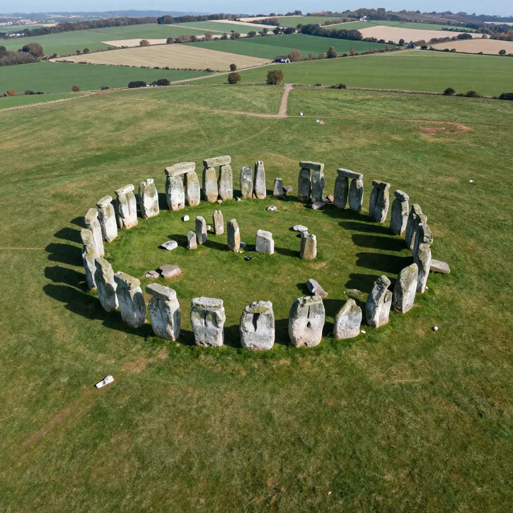
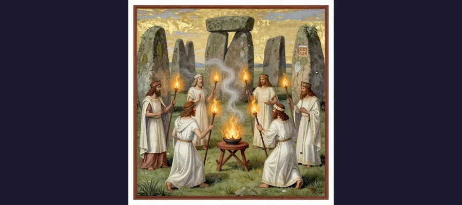

Stonehenge: The Ancient Monument That Still Defies Explanation

The iconic stone circle of Stonehenge has stood on Salisbury Plain for over 4,500 years.
Standing on the windswept Salisbury Plain in Wiltshire, England, Stonehenge has puzzled archaeologists, engineers, and dreamers for centuries. How did a prehistoric civilization — without wheels, pulleys, or metal tools — manage to transport massive stones weighing up to 25 tons from over 150 miles away? And perhaps more importantly, why?
Despite decades of excavation, cutting-edge scientific analysis, and no shortage of wild theories, Stonehenge remains one of the most captivating ancient mysteries on Earth.
Overview
A Monument Built in Stages
Stonehenge was not built in a single effort. Archaeologists have identified multiple phases of construction spanning roughly 1,500 years. Here are the key facts:
- 🪨 Construction began around 3000 BCE with a circular earthwork ditch and bank
- 🗿 The famous bluestones were brought from the Preseli Hills in Wales — over 150 miles away
- 📐 The massive Sarsen stones, weighing up to 25 tons each, were likely sourced from the Marlborough Downs, about 20 miles north
- ⏳ The tallest stone, the Great Heel Stone, stands about 16 feet above ground with an estimated 4 feet buried below
- 🧭 The monument is precisely aligned with the midsummer sunrise and midwinter sunset
The site evolved from a simple circular ditch into one of the most sophisticated stone circles ever constructed. Each phase added complexity, suggesting the builders had a clear, long-term vision that persisted across generations.

The trilithons — pairs of upright stones capped with horizontal lintels — are engineering marvels of the Neolithic world.
🦴 A Cemetery for the Elite?
In 2013, archaeologists discovered that Stonehenge may have originally served as a cemetery for an elite dynasty. Excavations revealed over 50,000 cremated bone fragments from at least 63 individuals, buried at the site over a span of 500 years.
Evidence
Research into Stonehenge is strongest when primary archaeological records, radiocarbon dating, and geological analysis converge. Recent digs and technological advances have transformed our understanding of the monument.
Breakthrough Discoveries
2021 — The Altar Stone Origin: Geologists determined that the Altar Stone, a six-ton sandstone slab at the center of Stonehenge, likely came from the Orcadian Basin in northeastern Scotland — over 460 miles away. This staggering distance stunned researchers and rewrote assumptions about Neolithic transport capabilities.
2020 — Durrington Walls Settlement: Archaeologists excavated remains of a large settlement at Durrington Walls, just 1.7 miles from Stonehenge. Evidence suggests thousands of people gathered there during the monument's construction, living in houses with plastered walls and clay floors.
2019 — Stable Isotope Analysis: Chemical analysis of pig bones found at Durrington Walls revealed that some animals were raised in northern England, western Wales, and even Scotland, suggesting people traveled enormous distances to participate in building the monument.
Competing Explanations
Multiple theories have been proposed to explain Stonehenge's purpose and construction methods. Each interpretation fits part of the evidence while leaving other questions unanswered.
The Astronomical Observatory
The most widely accepted theory is that Stonehenge functioned as an ancient astronomical calendar. The alignment with solstices is remarkably precise, and the arrangement of stones tracks solar and lunar cycles with sophistication that surprises modern astronomers.
A Healing Pilgrimage Site
Archaeologists Timothy Darvill and Geoffrey Wainwright proposed that the bluestones were believed to have healing properties. The stones' source in the Preseli Hills was associated with sacred springs, and the many skeletal remains at Stonehenge show evidence of illness and injury — as if people journeyed there seeking cures.

Modern archaeological techniques, including ground-penetrating radar and isotope analysis, continue to reveal new secrets about Stonehenge.
🔧 How Did They Move the Stones?
Experiments have shown that Neolithic builders likely used wooden sledges on rail-like timber tracks. In 2016, researchers at University College London demonstrated that just 10 people could move a one-ton stone this way. For the 25-ton Sarsen stones, teams of perhaps 100-200 people would have sufficed.
Open Questions
Despite the wealth of archaeological evidence, critical questions about Stonehenge remain unresolved. New discoveries continue to deepen the mystery as often as they resolve it.
What We Still Don't Know
The question of why the bluestones were brought from such an extraordinary distance remains one of the greatest puzzles. The 2021 revelation that the Altar Stone may have originated in Scotland makes this even more baffling — why transport a stone 460 miles when closer sources existed?
Additionally, the exact sequence and timing of each construction phase is still debated. Radiocarbon dating provides ranges, not exact years, and the monument was modified over centuries by different cultures with potentially different intentions.
Perhaps most tantalizing: ground-penetrating radar surveys in recent years have revealed extensive underground structures — pits, burial mounds, and possible ritual sites — extending far beyond the stone circle itself, suggesting Stonehenge was the centerpiece of a vast sacred landscape we are only beginning to understand.
📖 Recommended Reading
Want to learn more? Check out Stonehenge: The Story of a Sacred Landscape by David Jacques on Amazon for a deeper dive into this fascinating topic. (As an Amazon Associate, we earn from qualifying purchases.)
References & Further Reading
- Wikipedia: Stonehenge — Comprehensive overview of the monument
- English Heritage: The History of Stonehenge
- Britannica: Stonehenge — Archaeological site in England
- History.com: Stonehenge — Facts and theories about the ancient monument
- Smithsonian Magazine: New Light on Stonehenge
- Natural History Museum: Altar Stone origins in Scotland
Editorial note: We cross-check claims across multiple independent sources. See our Editorial Policy.